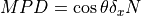
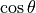
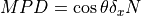
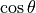

FAQ and Errors
This section contains a discussion on frequently asked questions and errors that sometimes pop up.
FAQ:
How is the interferometric angle taken into account?
We calculate the interferometric angle to calculate a correction factor (1/cos(theta)) which is applied to the broadening. We do not apply this correction factor to the spectral axis of each spaxel since this is already done in ORB – therefore, the data product downloaded from the CADC already has this correction applied! Normally, we would need to calculate the wavelength axis of each spaxel individually and then interpolate it (carefully!!!) onto a standard axis.
What is the broadening parameter in the sinc function?
The broadening parameter for the sinc function is SET to  .
We can adopt the following definition:  where 
is the cosine angle defined as
.
We can adopt the following definition:  where 
is the cosine angle defined as  .
.
 is the wavelength of the calibration laser and
is the wavelength of the calibration laser and  is
the measured calibration wavelength of a given pixel (thus
is
the measured calibration wavelength of a given pixel (thus  is a function of the pixel).
is a function of the pixel).
If you want to obtain a broadening parameter we strongly suggest using the sincgauss function!
Are other filters available?
YES! However, for the C1, C2, and C4 filters, we can only handle the case of redshift ~ 0.25 objects. Please note this is the intended science case for these filters.
Common Errors
ValueError: numpy.ndarray size changed, may indicate binary incompatibility. Expected 88 from C header, got 80 from PyObject
This error occasionally comes up when you have newly installed the luci conda environment and try to run extract_spectrum_region. This happens because your numpy version is disscordant with the environment. This can be simply remedied by reinstalling numpy.
pip uninstall numpy
pip install numpy